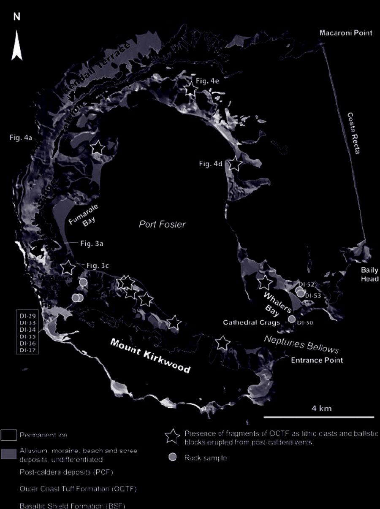

In landscape architecture, the struggle remains one of translation between the tools of computation, with all their prowess, and the creativity of the designers, with all their imagination — whether that struggle implies two separate individuals or one with an inner struggle, the syntax of communication is the bridge to be crossed.
Codify — 00.01 Coding Landscape, Bradley Cantrell and Adam Mekies
Computation · Landscape
This course introduces new conceptual frameworks on computational thinking, spatial structures, and associative modeling in conjunction with long-standing architectural techniques, technologies, and intra/inter software workflows fundamental to the design process. Terrain, vegetation, circulation, atmosphere, and water organize the semester, situate student learning activities, sequence learning assessments, and support critical, creative, and practical application of skills. The goal of the course is to introduce students to the fundamental ideas of computational design, as a supplement to 3D modeling and a foundation for later work with topics such as advanced digital fabrication and computational analysis within our program.“Design Computation I is the first of a three-course series that asks students to explore ways of analyzing and representing landscapes through a variety of 2-D (drafting), 3-D (modeling), and 4-D (simulation) models and methods.”

About the course
Design Computation I is the first of a three-course series that asks students to explore ways of analyzing and representing landscapes through a variety of 2-D (drafting), 3-D (modeling), and 4-D (simulation) models and methods that address design process and production and expose students to the resources, workflows, and concepts utilized in the praxis of landscape architecture.
The course examines a range of digital tools and their historical context through 12 lectures and 10 lab exercises. Weekly lectures present iconographic precedent drawings and time-based media within the landscape architecture canon as well as from affiliated fields; weekly lab sessions focus on specific representational techniques with an emphasis on the development of fluid workflows between modeling in Rhino and Grasshopper and graphics and layout in the Adobe Suite.
Faculty: Bradley Cantrell (Chair and Professor) and Bradford Goetz (Assistant Professor). Teaching Assistants: Weaam Alabdullah (PhD), Yu Cheng (MLA 2020), Wanyi Li (MLA 2020), and Cong Nie (MLA 2019). Meeting: Monday lecture 10:00–11:00 am (CAM 302A); Thursday lab 5:30–7:00 pm (CAM 105).